Qualitative comparison of PLACID to VACE, UNO, DSD, OmniGen, MS-Diffusion, NanoBanana and Qwen-Image-Edit. PLACID achieves superior identity preservation, background fidelity, and fewer missing objects across diverse compositing scenarios.
Recent advances in generative AI have dramatically improved photorealistic image synthesis, yet they fall short for studio-level multi-object compositing. This task demands simultaneous (i) near-perfect preservation of each item's identity, (ii) precise background and color fidelity, (iii) layout and design elements control, and (iv) complete, appealing displays showcasing all objects. However, current state-of-the-art models often alter object details, omit or duplicate objects, and produce layouts with incorrect relative sizing or inconsistent item presentations.
To bridge this gap, we introduce PLACID, a framework that transforms a collection of object images into an appealing multi-object composite. Our approach makes two main contributions. First, we leverage a pretrained image-to-video (I2V) diffusion model with text control to preserve object consistency, identities, and background details by exploiting temporal priors from videos. Second, we propose a novel data curation strategy that generates synthetic sequences where randomly placed objects smoothly move to their target positions. This synthetic data aligns with the video model's temporal priors during training. At inference, objects initialized at random positions consistently converge into coherent layouts guided by text, with the final frame serving as the composite image.
Extensive quantitative evaluations and user studies demonstrate that PLACID surpasses state-of-the-art methods in multi-object compositing, achieving superior identity, background, and color preservation, with fewer omitted objects and visually appealing results.
Given a set of object images, an optional background, and a text caption, PLACID produces a coherent multi-object composite. Below we show inputs (object photos + background) and the corresponding outputs on our evaluation set.


 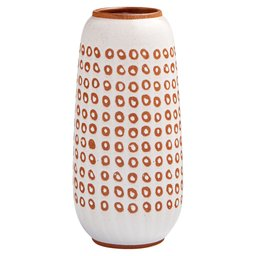
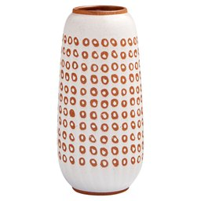

 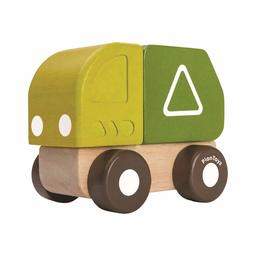
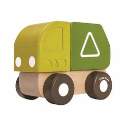


 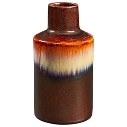
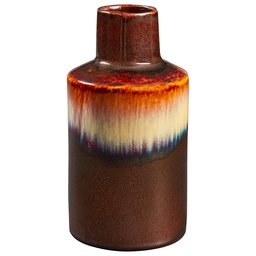

 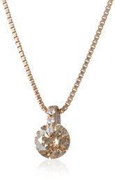
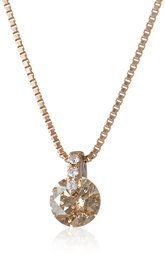


 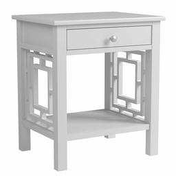
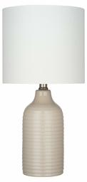
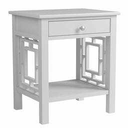
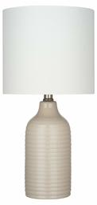


PLACID generates videos where objects transition from random initial positions to coherent layouts. The final frame serves as the composite image.

Our architecture builds upon an image-to-video diffusion transformer (DiT) with text guidance. The visual inputs, encoded via CLIP, include: (i) first frame F1 (a random assembly of unprocessed object images), (ii) individual object images I1..N, and (iii) an optional background B.
A caption describing the desired composition is encoded via T5. Image and text encodings are fed to the DiT through separate cross-attention mechanisms. The model flexibly handles varying numbers of objects, with or without a background image.
We synthesize short videos where objects follow smooth, physically plausible trajectories from initial random locations to desired final positions. This temporal scaffold helps preserve object identity during movement and prevents object erasure or duplication. We obtain training data from three complementary sources, yielding about 50K diverse annotated tuples: in-the-wild Unsplash compositions, manually designed layouts, Subject-200k paired data, and synthetic side-by-side 3D renders.

Top: Naive interpolation produces half-faded objects. Bottom: Our motion-based trajectories yield temporally consistent videos.
Qualitative comparison of PLACID to VACE, UNO, DSD, OmniGen, MS-Diffusion, NanoBanana and Qwen-Image-Edit. PLACID achieves superior identity preservation, background fidelity, and fewer missing objects across diverse compositing scenarios.
| Method | CLIP-I ↑ | DINO ↑ | CLIP-T ↑ | MSE-BG ↓ | Chamfer ↓ | Missing ↓ |
|---|---|---|---|---|---|---|
| Multi-Subject Guided Image Generation | ||||||
| UNO | 0.696 | 0.450 | 0.346 | 0.062 | 14.733 | 0.099 |
| DSD | 0.650 | 0.362 | 0.347 | 0.083 | 11.886 | 0.102 |
| OmniGen | 0.724 | 0.478 | 0.337 | 0.119 | 15.120 | 0.128 |
| MS-Diffusion | 0.574 | 0.245 | 0.314 | 0.166 | 16.322 | 0.071 |
| Image and Video Editing Models | ||||||
| VACE | 0.689 | 0.439 | 0.343 | 0.096 | 9.948 | 0.096 |
| NanoBanana | 0.662 | 0.390 | 0.344 | 0.029 | 13.146 | 0.138 |
| Qwen | 0.625 | 0.308 | 0.317 | 0.097 | 49.317 | 0.115 |
| Ours (PLACID) | 0.705 | 0.440 | 0.336 | 0.019 | 4.641 | 0.044 |
Metrics: Missing (% objects missing), CLIP-I/DINO (identity preservation), CLIP-T (text alignment), Chamfer (background color fidelity), MSE-BG (background faithfulness).

User studies with 1265 side-by-side comparisons by eight external users, assessing identity preservation and overall visual preference. PLACID outperforms all open-source alternatives in both studies.

While PLACID is trained for text-guided multi-object compositing, it exhibits several emerging capabilities:
@article{canettarres2026placid,
title={PLACID: Identity-Preserving Multi-Object Compositing via Video Diffusion with Synthetic Trajectories},
author={Canet Tarr{\`e}s, Gemma and Baradad, Manel and Moreno-Noguer, Francesc and Li, Yumeng},
journal={arXiv preprint arXiv:2602.00267},
year={2026}
}